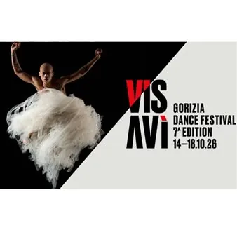

da lun 12 ott a dom 18 ott
Visavì Gorizia Dance Festival
Visavì Gorizia Dance Festival è il primo festival internazionale transfrontaliero di danza contemporanea a Gorizia e Nova Gorizia, ideato da Artisti Associati in partenariato con i Comuni di Gorizia, Cormons e Gradisca d’Isonzo. Il partenariato internazionale coinvolge l’SNG di…
 Indicazioni
Indicazioni
- Costi e prenotazioni
- Costo non indicato · Prenotazione non indicata
- Programma
- Programma da verificare. Apri la fonte ufficiale per orari e possibili aggiornamenti.
- In caso di maltempo
- Nessuna indicazione specifica pubblicata.
- Note
- Acquisito automaticamente dalla fonte.
L’EVENTO
Descrizione completa
Visavì Gorizia Dance Festival è il primo festival internazionale transfrontaliero di danza contemporanea a Gorizia e Nova Gorizia, ideato da Artisti Associati in partenariato con i Comuni di Gorizia, Cormons e Gradisca d’Isonzo. Il partenariato internazionale coinvolge l’SNG di Nova Gorica e il network di operatori della danza Pan Adria (Slovenia, Croazia, Italia).
Calendario eventi a Gorizia:
da lunedì 12 a mercoledì 14 ottobre
Borgo Live Academy, via Rastello
ore 17.00 – Workshop a cura di Valerio Longo
Balletto di Roma
mercoledì 14 ottobre
Teatro Verdi, via Garibaldi 2/A
ore 20.30 – “Io & Noi” Academy Stage
Restituzione pubblica del lavoro svolto durante il workshop con Valerio Longo, che vedrà protagonisti i partecipanti al workshop
ore 21.00 – Capitolo XV
Equilibrio Dinamico Dance Company
In occasione del quindicesimo anniversario della compagnia, Capitolo XV riunisce due opere che interrogano il rapporto tra corpo, comunità e memoria collettiva:
Mahalaga Landscapes di Jill Crovisier
People Used to Die del collettivo (LA)HORDE
giovedì 15 ottobre
Kulturni Center Lojze Bratuž
ore 10.30 – “Au delà des nuages/Oltre le nuvole”
National Première
Compagnia Gipsy raw (Francia) di Manon Mafrici e Pasquale Fortunato
Il pubblico viene trasportato in un universo poetico in cui danza, contorsionismo e illusione si fondono
ore 18.00 -“Pozzi”
National preview
A partire dalle poesie, lettere e diari di Antonia Pozzi, Michele Ermini costruisce un dialogo tra parola e corpo, presenza e assenza.
“Nulla dies sin linea”
Allude alla necessità dell’esercizio quotidiano, senza il quale nessun traguardo può essere conseguito
Fuorimargine – Centro di Produzione della danza in Sardegna/ Roberta Racis
venerdì 16 ottobre
ore 20.30 – “The King is Love” Academy Stage
Progetto è ideato e diretto da Marianna Basso
ore 21.00 – “Venezuela”
Una delle creazioni più emblematiche di Ohad Naharin, che vede sul palco la compagnia Balletto del Teatro Nazionale Croato Ivan pl. Zajc di Fiume
sabato 17 ottobre
Kulturni dom, via Brass 20
ore 11.00 – “Playing Body ” workshop
Laboratorio di danza rivolto ai bambini dai 3 agli 11 anni, in cui corpo, movimento e immaginazione si incontrano attraverso il gioco
A cura di Dancehood (CZE)/ Yana Reutova
domenica 18 ottobre
Ore 11.00 – “Childhood Time”
Dancehood (CZE)/ Yana Reutova
Programma completo: QUI
IL PROGRAMMA
Programma e orari
Appuntamenti raccolti dalle fonti elencate. Dove manca un orario, non è ancora disponibile in questa scheda.
Programma pubblicato
- ore 17.00 – Workshop
- ore 20.30 – “Io & Noi”
- ore 21.00 – Capitolo XV
- ore 10.30 – “Au delà des nuages/Oltre le nuvole”
- ore 18.00 -“Pozzi”
- ore 20.30 – “The King is Love”
- ore 21.00 – “Venezuela”
- ore 11.00 – “Playing Body
- Ore 11.00 – “Childhood Time”
INFORMAZIONI UTILI
Prima di partire
- Controllare la fonte prima di partire.
ORGANIZZAZIONE